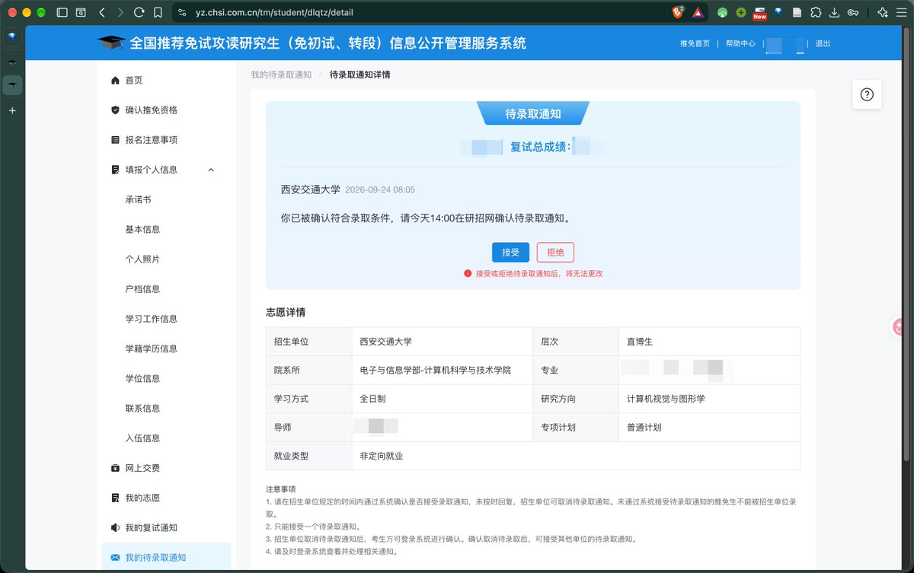

hsn今天吃什么
@hsn8086k
@Farewe1ll sz强强

Farewe1ll. 山竹 🔜 武汉！
@Farewe1ll
开奖前一分钟 我说 突然想哭
系统加载的时候 大概已经没有办法描述情绪
转专业没吃到红利 申报刚好错过一个奖学金 被身体拖累一个学期
拿着几乎没救的rk四处碰壁
可能几个月的焦虑真的不好受
可能太久没哭了 都没多少眼泪 吼了半天大概哭累了
感谢家人与亲友的陪伴与支持
祝自己前程似锦。 https://t.co/bxA8BDP6bz